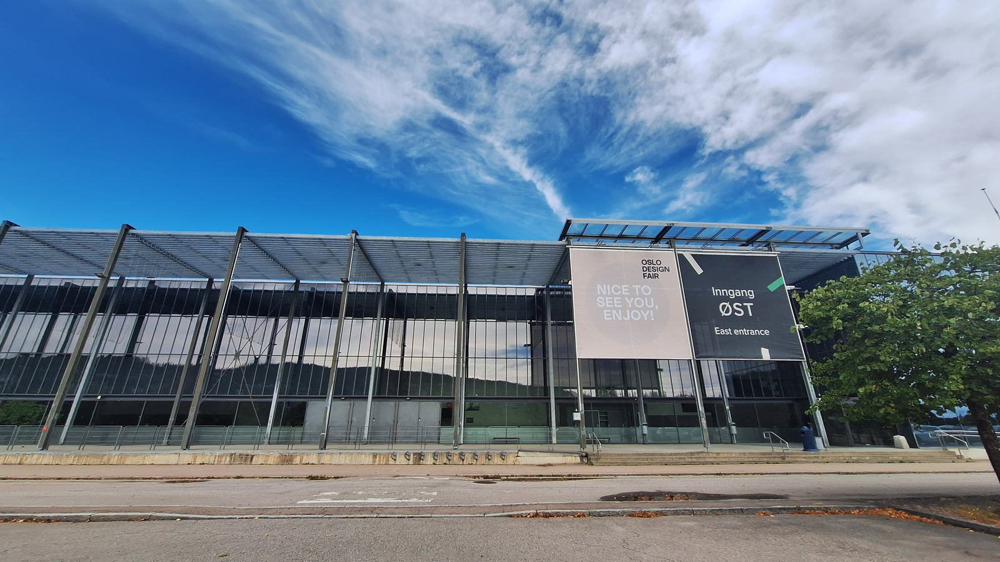
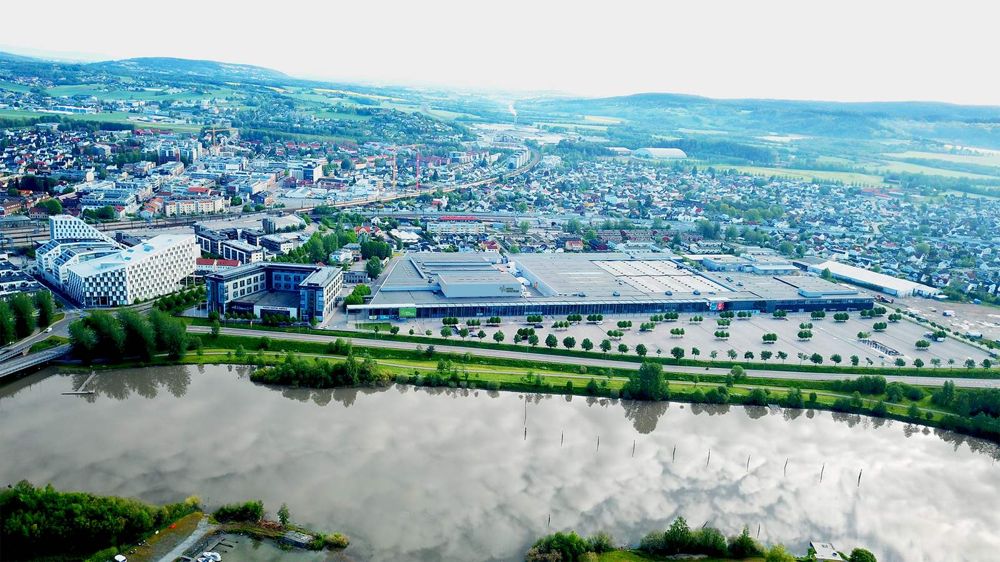

Venue · Convention centre
NOVA Spektrum
- Type
- Convention centre
- Location
- Lillestrøm, Norway
- Address
- Messeveien 8, 2004 Lillestrøm
- Capacity
- 10,000 capacity
- Exhibition space
- 39,000 m²
- Halls
- Seven halls totalling 39,000 sqm of exhibition space, and 55 meeting rooms (more than 25 of them for over 100 people)
- Official website
- https://novaspektrum.no/
About
Norway’s largest meeting place for trade fairs, congresses, conferences, banquets and concerts, officially at Messeveien 8, 2004 Lillestrøm. Official about copy states seven halls providing 39,000 square metres of exhibition space, stored as exhibition_sqm, and congresses for up to 10,000 participants with a plenary hall of up to 6,000, stored as capacity_max_delegates. Official figures also include dinners for up to 6,000, banquets for 2,500 at round tables, standing concerts for up to 12,000, and 55 meeting rooms. Official hall areas were recorded for Halls A–E (2,125, 7,200, 7,880, 10,500 and 7,150 sqm).
Spaces
| Name | Type | Capacity | Area |
|---|---|---|---|
| Hall A | — | — | 2,125 m² |
| Hall B | — | — | 7,200 m² |
| Hall C | — | — | 7,880 m² |
| Hall D | — | — | 10,500 m² |
| Hall E | — | — | 7,150 m² |
Upcoming events
Sources
- Official source — https://novaspektrum.no/en/norways-largest-meeting-place/
- Official source — https://novaspektrum.no/
- Official source — https://novaspektrum.no/en/halls/